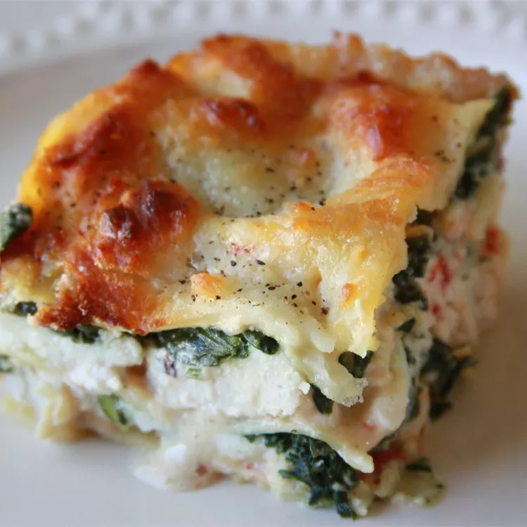

Lasagna Alfredo

Description
This chicken Alfredo lasagna with ricotta and spinach is so good that my family requests it at least once a week. Serve with diced tomato as a garnish.
Ingredients
- 1 (16 ounce) package lasagna noodles
- 1 (10 ounce) package frozen chopped spinach
- 3 cooked, boneless chicken breast halves, diced
- 2 (16 ounce) jars Alfredo-style pasta sauce, divided
- 2 pints ricotta cheese
- 4 cups shredded mozzarella cheese
- salt and ground black pepper to taste
Steps
- Preheat the oven to 350 degrees F (175 degrees C).
- Bring a large pot of lightly salted water to a boil. Add lasagna noodles and cook until tender yet firm to the bite, 8 to 10 minutes; drain.
- Place frozen spinach and 1/2 cup water in a 2-quart nonstick saucepan; bring to a boil. Reduce heat to medium-high, cover, and cook, stirring occasionally, until spinach is tender, 6 to 7 minutes. Drain and squeeze out any excess water.
- Stir together chicken and 1 jar Alfredo sauce in a medium bowl until well combined.
- Mix together ricotta and spinach in a second medium bowl until well combined.
- Arrange a single layer of lasagna noodles in a 9x13-inch baking dish, edges overlapping. Pour chicken-Alfredo mixture over noodles and spread evenly. Sprinkle with 1 cup mozzarella. Cover with another layer of noodles. Spread spinach mixture evenly over noodles. Pour 1/2 of the remaining jar of Alfredo sauce over spinach mixture and spread evenly. Sprinkle with 1 cup mozzarella. Lay on a final noodle layer and top with remaining 1/2 jar Alfredo sauce and 2 cups mozzarella. Season with salt and pepper.
- Bake in the preheated oven until the top is brown and bubbly, 50 to 60 minutes.